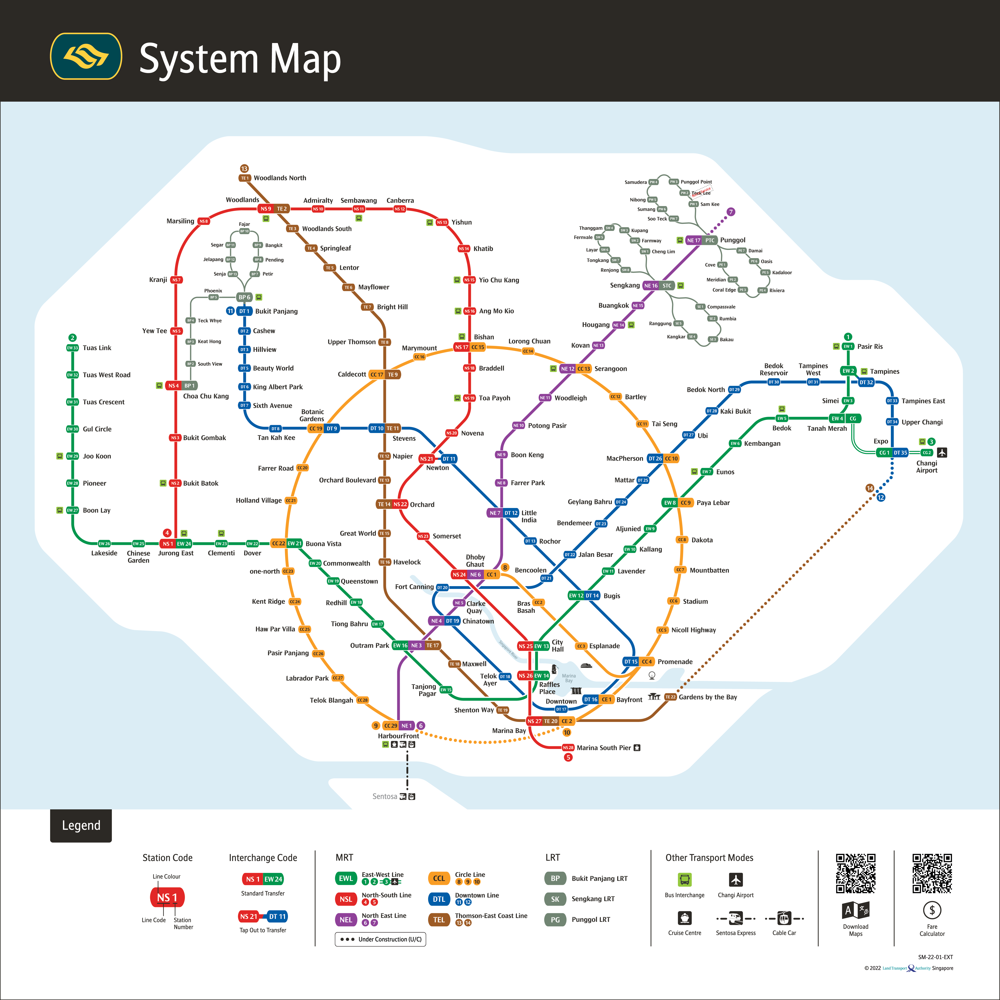

Rail Network

That's my Rail Network!
Singapore System Map
- 140 stations across 6 MRT Lines
- 200 km systems has over 3 milion daily ridership
- The train system is currently run by 2 public transport operators – SMRT Corporation Ltd (SMRT) and SBS Transit (SBST).
Singapore MRT Map Expansion 1987-2024-2050
Created by: Joshua Chung
Contact Information: joshua_chung@dovercourt.edu.sg.com